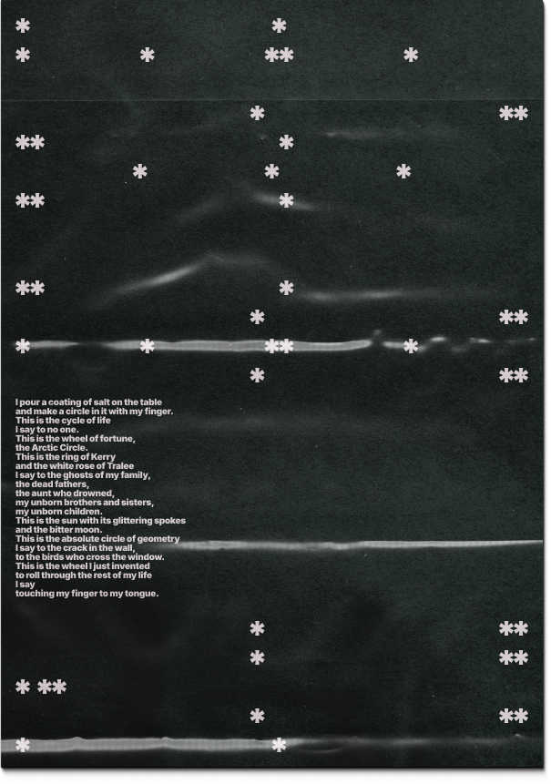
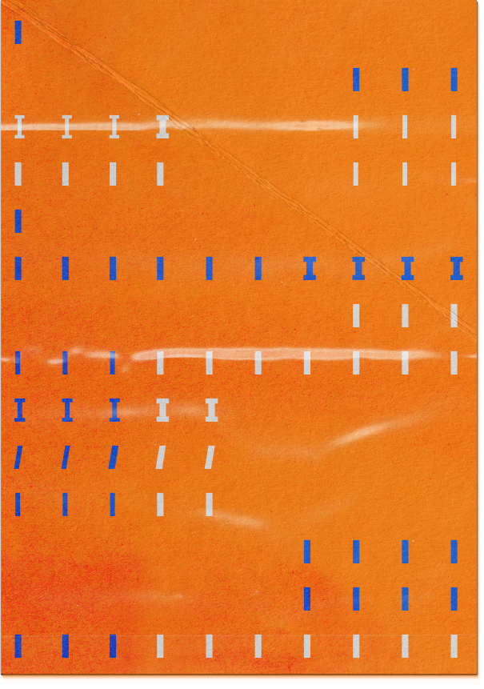

(uso decorativo y experimental de símbolos y letras)


Inter es una tipografía versátil y resistente, cuidadosamente diseñada para una amplia variedad de aplicaciones, desde interfaces de usuario detalladas hasta materiales de marketing y señalización. La familia tipográfica Inter incluye más de 2000 glifos que cubren 147 idiomas. Sus pesos van desde un delicado Thin 100 hasta un Heavy 900. Cada glifo cuenta con tres diseños específicos para los pesos 100, 400 y 900, lo que garantiza una excelente calidad en cualquier grosor. Además, ofrece un rango óptico que va de "text" a "display" y una verdadera variante cursiva.
Con este proyecto de specimen se busca mostrar una visión diferente de la tipografía Inter: cómo una fuente pensada principalmente para proyectos digitales y de interfaz puede funcionar perfectamente en proyectos artísticos, experimentales o editoriales. En este proyecto se abordará Inter como fuente variable, mostrando variaciones de estilo y glifos para resaltar su versatilidad. Aunque este specimen es una versión resumida, estoy seguro de que ayudará a entender y utilizar una fuente como esta de una forma más amplia e incluso diferente.
(castellano)
Inter Variable es una tipografía moderna que aprovecha el poder de las fuentes variables, permitiendo ajustar suavemente el peso, la inclinación y el tamaño óptico en un solo archivo. Gracias a sus ejes wght, slnt y opsz, los diseñadores pueden controlar con precisión la apariencia del texto: desde un trazo fino y elegante hasta uno fuerte y audaz, con variaciones continuas entre ambos. Esto no solo ofrece flexibilidad visual y coherencia tipográfica, sino también mejor rendimiento web, al reducir la carga de múltiples archivos de fuente.
font size: 12pt
(chino)
英特可变字体（Inter Variable） 是一款现代化的字体，它充分利用了 可变字体（Variable Font） 的强大功能，只需一个字体文件，就能平滑地调节字重、倾斜度和光学尺寸。 通过其 wght、slnt 和 opsz 三个可变轴，设计师可以精确地控制文字的外观：从纤细优雅到厚重醒目，过渡自然流畅。 这种设计不仅提供了 视觉上的灵活性 和 排版上的一致性，还通过减少字体文件数量，实现了 更高的网页性能。
font size: 8pt
(árabe)
إنتر فاريابل (Inter Variable) هي خط حديث يستفيد بالكامل من قوة الخطوط المتغيرة (Variable Fonts)، حيث يمكن من خلال ملف واحد فقط تعديل وزن الحروف، وميلها، وحجمها البصري بسلاسة. ومن خلال المحاور المتغيرة wght و slnt و opsz، يستطيع المصممون التحكم بدقة في مظهر النص — من الخطوط الرفيعة والأنيقة إلى السميكة والجريئة، مع انتقالات سلسة بينهما. يوفر هذا التصميم مرونة بصرية واتساقاً طباعياً، كما يحسّن أداء الويب بفضل تقليل عدد ملفات الخطوط المطلوبة.
font size: 10pt
(griego)
Ίντερ Βάριεϊμπλ (Inter Variable) είναι μια σύγχρονη γραμματοσειρά που αξιοποιεί πλήρως τη δύναμη των μεταβλητών γραμματοσειρών (Variable Fonts), επιτρέποντας την ομαλή ρύθμιση του πάχους, της κλίσης και του οπτικού μεγέθους μέσα από ένα μόνο αρχείο γραμματοσειράς. Μέσω των αξόνων wght, slnt και opsz, οι σχεδιαστές μπορούν να ελέγχουν με ακρίβεια την εμφάνιση του κειμένου — από λεπτές και κομψές μορφές έως έντονες και δυναμικές, με ομαλές μεταβάσεις μεταξύ τους. Αυτός ο σχεδιασμός προσφέρει οπτική ευελιξία και τυπογραφική συνέπεια, ενώ βελτιώνει την απόδοση του ιστού μειώνοντας τον αριθμό των αρχείων γραμματοσειρών που απαιτούνται.
font size: 12pt
(georgiano)
ინტერ ვარიეიბლი (Inter Variable) არის თანამედროვე შრიფტი, რომელიც სრულად იყენებს ცვლადი ფონტების შესაძლებლობებს. იგი საშუალებას იძლევა ერთ ფაილში გლუვად მოირგოს შრიფტის სიმძიმე, დახრა და ოპტიკური ზომა. მისი ღერძების — wght, slnt და opsz — მეშვეობით დიზაინერებს შეუძლიათ ტექსტის გარეგნობის ზუსტად კონტროლი: თხელი და ელეგანტური ხაზიდან ძლიერი და გამოკვეთილამდე, უწყვეტი გარდამავლობით შორის. ეს არა მხოლოდ ვიზუალურ მოქნილობასა და ტიპოგრაფიულ თანმიმდევრულობას უზრუნველყოფს, არამედ აუმჯობესებს ვებ-წარმადობასაც, რადგან ამცირებს მრავალ შრიფტის ფაილის ჩატვირთვის საჭიროებას.
font size: 12pt